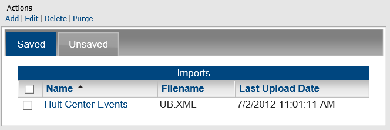
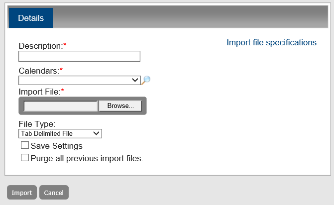
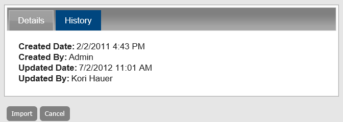

You use the Import Events function to import events into Master Calendar. The file that contains the events can be a tab-delimited file that has been created in another system such as Microsoft Excel or it can be an XML file. You can import a tab-delimited file or an XML file into Master Calendar only if it adheres to file specifications that DEA has defined for Master Calendar.
This topic guides you in importing an event, editing, deleting and purging imported events, and viewing the history for an imported event.
TIP: Ensure Master Calendar is connected to the EMS database as a data source and has connectors set up.


Details Tab Fields
|
Field |
Description |
|---|---|
|
Description |
A description of the file or the information that you are importing. |
|
Calendars |
A list of all active calendars to which you have access as Calendar Manager. Click the Lookup icon to open the Calendars dialog box and select the calendars to which you are adding the special date. |
|
Import File |
Click Browse to open the Choose File dialog box to browse to and select the file that is to be imported. |
|
File Type |
Dropdown from which you can select one of two options:
|
|
Save Settings |
Optional. Select this value to save the imported file in Master Calendar. |
|
Purge all previous import file |
Optional. Select this value to purge all previously imported events that were saved in Master Calendar. |
NOTE: You can only edit an import file only if you saved it in EMS Master Calendar.

NOTE: When you delete a saved import file, you are deleting the import file plus all the events that were added to the calendars as a result of the import. When you delete an unsaved import file, you are not truly deleting a file. Instead, you are simply deleting all the events that were added to the calendars as a result of the import.